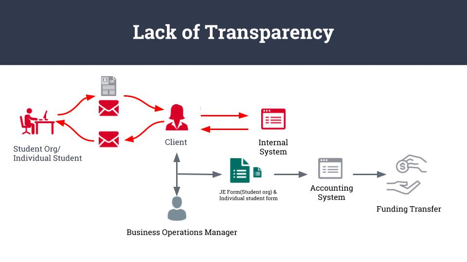
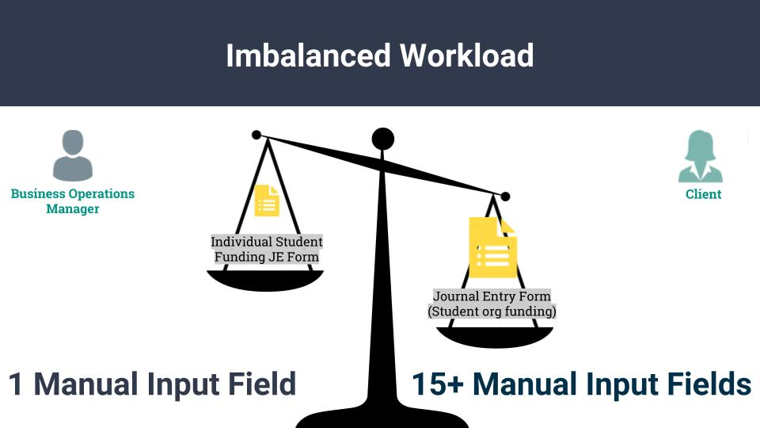

Overview
The University of Michigan College of Engineering Office of Student Affairs’ current workflow for processing student/student organization requests for funding has proven to be manually-intensive, duplicative, and inefficient in nature.
Team Lens interviewed College of Engineering staff and students to learn about their individual interactions with the funding process.
After investigation and analysis of the qualitative and quantative data, we recommended that the Office of Student affairs takes one of the following approaches to return time to the Office of Student Affairs staff members:
- Immediate Fix
- Systemic Fix
- Comprehensive Fix
Clients Background
The University of Michigan College of Engineering Office of Student Affairs provides support and opportunities for all of its engineering students on a wide variety of topics.
The Office of Student Affairs staff are spending a disproportionate amount of time on processing applications for funding because of inefficiencies and inaccuracies created during the manual-intensive process of and reviewing, approving, and processing.
Contexual Inquiry Interview Process
To determine the main sources of inefficiencies in the process, Team Lens interviewed Mariah Fiumara (Student Affairs Program Manager for the Office of Student Affairs and primary client), a member of Resource Planning for the University of Michigan (RP1), and three students (S1, S2, and S3). Mariah Fiumara and RP1 are both staff members that handle processing applications. S1, S2, and S3 are all College of Engineering students that have received funding for their student organizations and/or individually.
Keyfindings from the Affinity Wall
After conducting the interview, we interpreted and analyze the interview data. Using the method from affinity diagram, we concluded that there are three painpoints for the client.

Students have no issues with the actual process but transparency
One important finding is that the students agree that the process of applying funding is straightforward and fairly simple, as noted by S1, S2, and S3, though there are questions that are more difficult to answer for newer organizations.

There is an imbalanced workload between Mariah and RP1.
The second important finding was that there is a significant workload imbalance between Mrs. Fiumara and RP1. Though RP1 is unable to decide whether a student/student organization receives funding because of her role in accounting/auditing, she and Mrs. Fiumara can divide the role of manually entering information in the journal entry forms.

Duplicative manual inputs prolongs the funding process.
The inefficient nature of processing the applications needs significant improvements so that Mrs. Fiumara does not need to manually hunt for information in a variety of sources (her email inbox, Qualtrics, Microsoft Excel, Google Forms, printed information) to cross-check, validate, and move applications forward.

Inefficiencies, the demands of manual data entry, and the duplicative nature of the funding process are frustrating for the Office of Student Affairs staff and make it so that Mrs. Fiumara must work additional, non-regular working hours to ensure that students receive their requested funding on-time. The burden of processing the application falls heavily on her, though she and RP1 can theoretically split some of the manual work between them.
Recommendations
Immediate Fix
To immediately alleviate the burden of the amount of time that Mrs. Fiumara is spending on processing funding applications, Team Lens recommends that the Office of Student Affairs resumes its usual practice of hiring a part-time graduate intern whose role is to perform all of the manually intensive parts of the funding process (journal entry forms, data entry into Microsoft Excel, preparing documents to be presented to the monthly meeting with the review committee) and to communicate with students about questions that they have about the process, including status updates and notifications of whether or not approval has been granted for their funding requests.
Systemix Fix
Though hiring a graduate intern would be an immediate fix to Mrs. Fiumara’s task burden, it would serve as a type of “patch”, since the root of the issue would not be solved. A systemic fix would be to implement an application tracking system that would make student application status updates visible within the platform itself so that students would not have to ask Mrs. Fiumara for updates, which she notes is a significant amount of time that is currently lost to her.
Comprehensive Fix
A final, comprehensive solution to the problem of the inefficient student funding process is to completely automate the workflow to create a singular point/platform for student applicants and Office of Student Affairs staff to complete and check the status of the application.